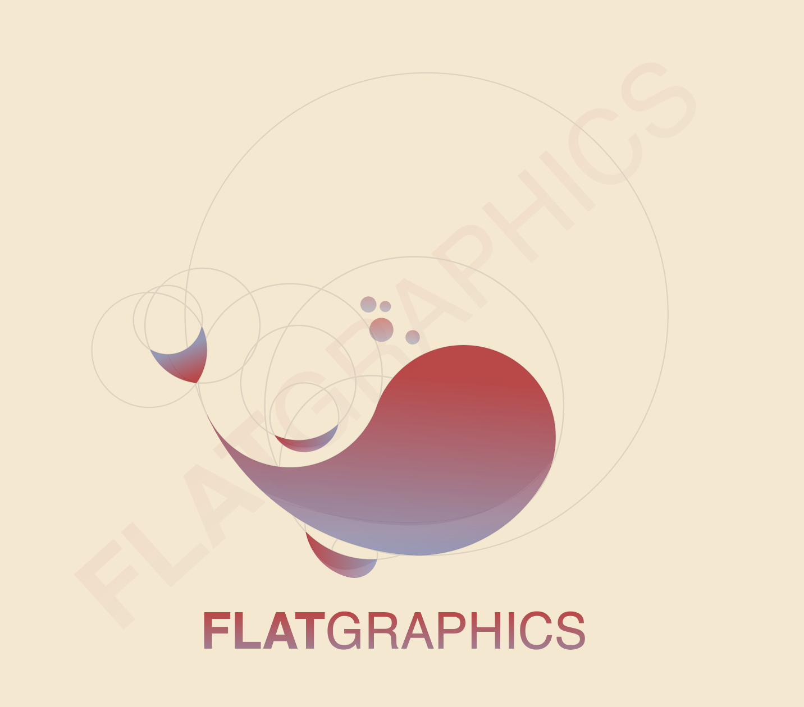
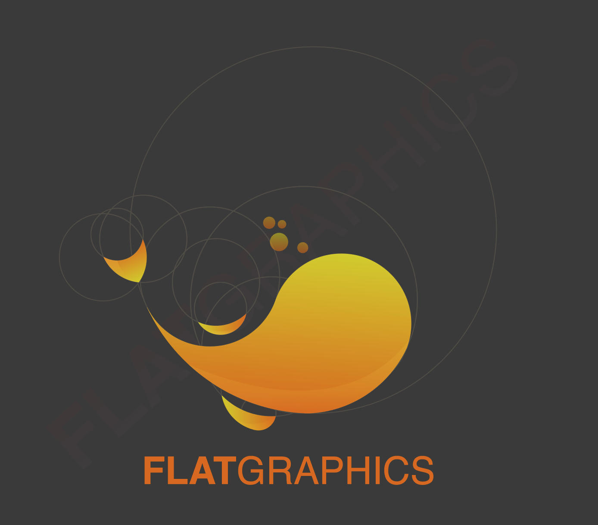

Jie Min's business
Ventures
As Marie Forleo once said, "Never start a business just to 'make money', start a business to make a difference."
Jie Min learned a whole lot about through the flaws and strengths of each of these businesses.
FlatGraphics
In November 2017, Inge and Jie Min decided they needed to earn enough money to fund their internship trips. Inge and Jie Min, a designer and artist individually, came together to start a carousell account selling designs.
 Above are the mockups they made, using the golden ratio design principles.
In the premises of this business, Jie Min functions as finance manager and the concept artist. Because of her meticulousness, both roles are a good fit for her.
By identifying their own strengths and joining forces, Inge and Jie Min are able to start a small business. Through this endeavour, Jie Min learned the importance of customer satisfaction and drafting an effective Standard of Procedure (SOP) for the business.
Fold For Fund
In December 2015, Jie Min, Yu Xuan and Krystie started Fold For Fund as a passion project. Jie Min's neighbourhood cat passed away, and she decided that she needed to do something in honour of the cat.
During that time, Yu Xuan proposed to sell his handmade origami works for a non-governmental organisation.
This big idea was no small feat for two 16-year-olds.They needed someone with a flair for organisation to help them out. So Krystie joined the team.
Together, the three of them came up with a plan, contacted Society for the Prevention of Cruelty to Animals (SPCA) and pitched the idea.
The idea was well-received by SPCA, but Jie Min and her friends ran into some problems.
The first was manpower: There was no way Yu Xuan could mass-produce his handicrafts within the short leadtime SPCA and the F4F team agreed upon. Jie Min originally planned to outsource that manpower to her secondary school, by involving the students and getting them to volunteer to fold the origami. However, the plan fell through as the school could not agree on a time and location for F4F to organise their activity.
The second was logistics: The product design required boxes and paper, which were not cheap. The team had to go back to the drawing board multiple times to revise the designs of the product so it achieved the requirements of SPCA and the target market.
To solve the second problem, Jie Min lead the team to try out for the Citi-YMCA Youth For Causes Funding. F4F's pitch was unsuccessful, but it taught all three members something new about pitching campaigns.
Lastly, as discussions went back and forth with SPCA (including a face-to-face meeting), it was time for Jie Min and her team to enroll in their new schools.
This passion project took a backseat ever since, but it has lived in the hearts of everyone on the F4F team.
From this project, Jie Min learned that a plan - no matter how good it looks on paper and in her mind - will not go through unless logistics, timing and manpower are just right. However, she is grateful for this valuable experience as it taught her at the age of 16 how to run a project and organise meetings with authorities, potential sponsors and organisations.